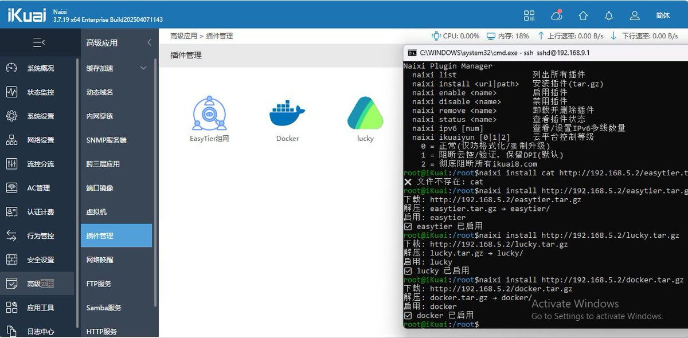
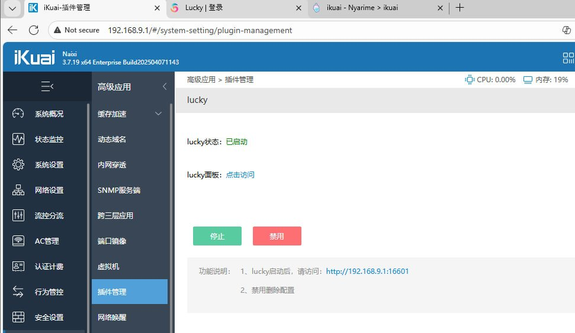
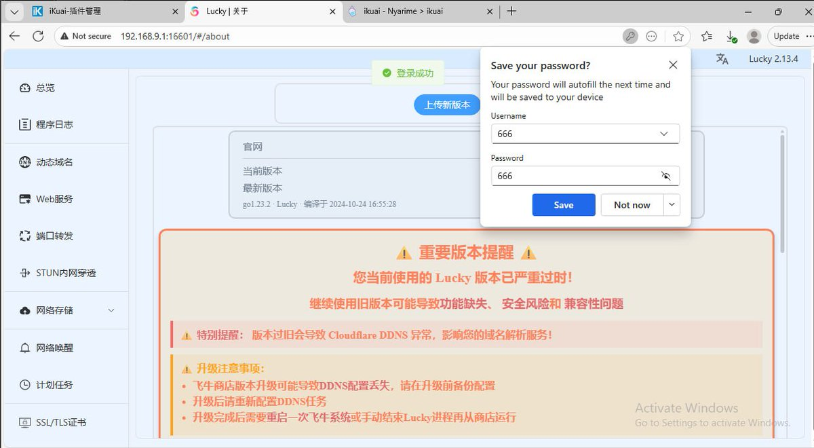
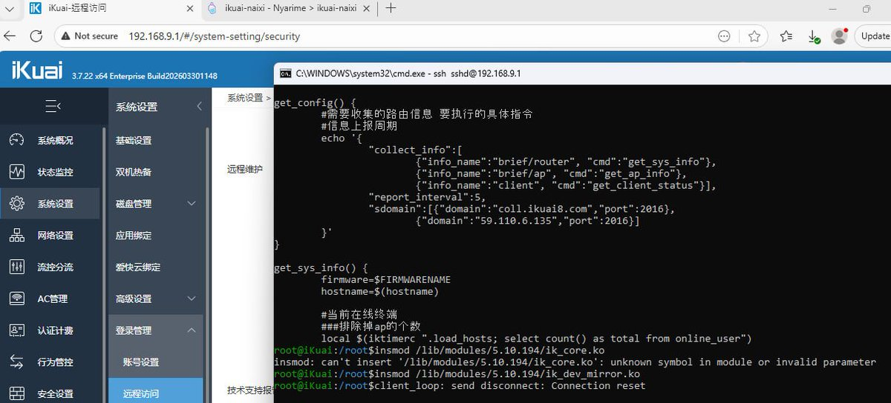
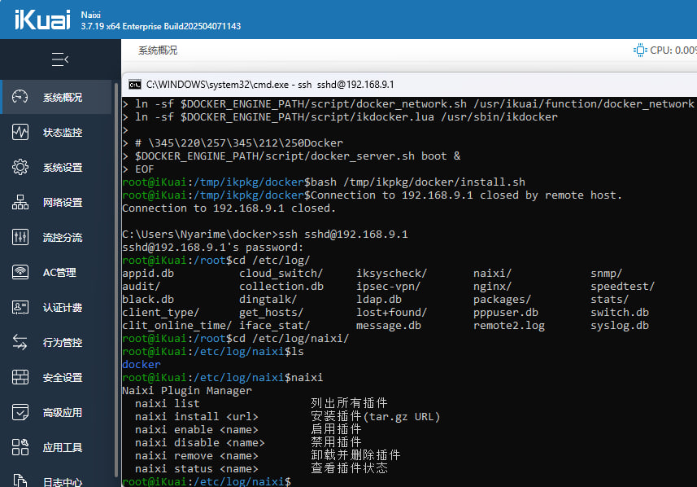
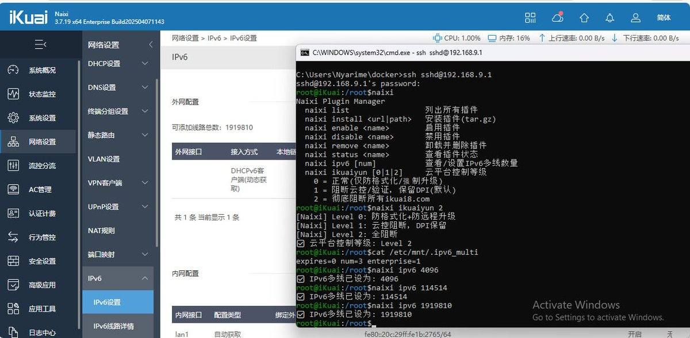

给爱快装轻量的Shell插件是没问题的，包括持久化都很好做，插件会在重启后被重新挂载和启动
至于iKuaiOS官方的PMD，其实也可以做兼容，但那个开发文档看的眼花缭乱，感觉还不如单独维护一个包管理器了，毕竟这玩意借鉴了OpenWRT也不算完全抄，好歹前端、防火墙那些都是自研
至于后门问题，已经编辑掉了
反正爱快官方用了5KB区分了免费版和企业版，至于花钱买啥，买了个爱快系统送你一台废物ARM路由器，或是企业图省事简单采购，反正上手挺傻瓜化的

至于iKuaiOS官方的PMD，其实也可以做兼容，但那个开发文档看的眼花缭乱，感觉还不如单独维护一个包管理器了，毕竟这玩意借鉴了OpenWRT也不算完全抄，好歹前端、防火墙那些都是自研
至于后门问题，已经编辑掉了
反正爱快官方用了5KB区分了免费版和企业版，至于花钱买啥，买了个爱快系统送你一台废物ARM路由器，或是企业图省事简单采购，反正上手挺傻瓜化的






自从有爱快4.0后3.7.x已经没咋更新了，今晚把rootfs里的上报、云控和检测都hook了，也把插件持久化的落地了
打算接下来往OpenWRT插件兼容，本身IPK格式就是tar.gz。像Shell类插件（lucky/alist/frp）倒是没多大问题，静态编译binary成功率100%，uClibc动态链接~80%，musl需要兼容层 https://t.co/Yj6ndguG5G https://t.co/IAtsoHWD2c
打算接下来往OpenWRT插件兼容，本身IPK格式就是tar.gz。像Shell类插件（lucky/alist/frp）倒是没多大问题，静态编译binary成功率100%，uClibc动态链接~80%，musl需要兼容层 https://t.co/Yj6ndguG5G https://t.co/IAtsoHWD2c